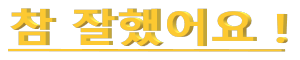
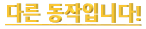

{% extends 'index_nav_cam.html' %}
{% block content %}
{% load static %}

<!-- Masthead-->
<section class="page-section" id="team" style="padding: 3rem;">
    <div class="container">
        <div class="text-center">
            <h2 class="section-heading text-uppercase">같이즐겨요</h2>
            <h3 class="section-subheading text-muted">방금 본 그림을 기억하여 화면에 따라해보세요</h3>
        </div>
        <div class="row">
        </div>
    </div>
</section>

<div style="position: fixed; top: 50%; left: 50%; transform: translate(-50%, -50%); width: 600px; height: 480px; display: flex; justify-content: center; align-items: center;">
    
    <video id="video" playsinline="" class="canvas-wrapper"
           style="position:absolute; visibility: hidden; width: auto; height: auto; z-index: 2;"></video>
    <canvas id="output" style="position:absolute; z-index: 3;"></canvas>
</div>

<!-- Require the peer dependencies of hand-pose-detection. -->
<script src="https://cdn.jsdelivr.net/npm/@tensorflow/tfjs-core"></script>
<script src="https://cdn.jsdelivr.net/npm/@tensorflow/tfjs-converter"></script>
<!-- You must explicitly require a TF.js backend if you're not using the TF.js union bundle. -->
<script src="https://cdn.jsdelivr.net/npm/@tensorflow/tfjs-backend-webgl"></script>
<script src="https://cdn.jsdelivr.net/npm/@tensorflow-models/hand-pose-detection"></script>
<!--<script src="https://tistory3.daumcdn.net/tistory/5290078/skin/images/camera.js"></script> -->
</body>
</html>
{% endblock %}


<script>
let detector, camera, stats;
let startInferenceTime, numInferences = 0;
let inferenceTimeSum = 0, lastPanelUpdate = 0;
let test = document.getElementById('introImg');
let test2 = test.getAttribute("src");
let test3 = test2.replace("../media/opencv_images/", "").replace(".png", "");

const fingerLookupIndices = {
  thumb: [0, 1, 2, 3, 4],
  indexFinger: [0, 5, 6, 7, 8],
  middleFinger: [0, 9, 10, 11, 12],
  ringFinger: [0, 13, 14, 15, 16],
  pinky: [0, 17, 18, 19, 20],
}; // for rendering each finger as a polyline

function isiOS() {
  return /iPhone|iPad|iPod/i.test(navigator.userAgent);
}

function isAndroid() {
  return /Android/i.test(navigator.userAgent);
}

function isMobile() {
  return isAndroid() || isiOS();
}

class Camera {
  constructor() {
    this.video = document.getElementById('video');
    this.canvas = document.getElementById('output');
    this.img = document.getElementById('introImg');
    this.emo = document.getElementById("emo");
    this.bt = document.getElementById('bt');
    this.ctx = this.canvas.getContext('2d');


  }

  static async setupCamera() {
    if (!navigator.mediaDevices || !navigator.mediaDevices.getUserMedia) {
      throw new Error(
        'Browser API navigator.mediaDevices.getUserMedia not available');
    }

    const $size = { width: 600, height: 540 };
    const $m_size = { width: 360, height: 270 };
    const videoConfig = {
      'audio': false,
      'video': {
        facingMode: 'user',
        // Only setting the video to a specified size for large screen, on
        // mobile devices accept the default size.
        width: isMobile() ? $m_size.width : $size.width,
        height: isMobile() ? $m_size.height : $size.height,
      }
    };

    const stream = await navigator.mediaDevices.getUserMedia(videoConfig);

    const camera = new Camera();
    camera.video.srcObject = stream;

    await new Promise((resolve) => {
      camera.video.onloadedmetadata = () => {
        resolve(video);
      };
    });

    camera.video.play();

    const videoWidth = camera.video.videoWidth;
    const videoHeight = camera.video.videoHeight;
    // Must set below two lines, otherwise video element doesn't show.
    camera.video.width = videoWidth;
    camera.video.height = videoHeight;

    camera.canvas.width = videoWidth;
    camera.canvas.height = videoHeight;
<!--    const canvasContainer = document.querySelector('.canvas-wrapper');-->
<!--    canvasContainer.style = `width: ${videoWidth}px; height: ${videoHeight}px`;-->

    // Because the image from camera is mirrored, need to flip horizontally.
    camera.ctx.translate(camera.video.videoWidth, 0);
    camera.ctx.scale(-1, 1);

    return camera;
  }

  drawCtx() {
    this.ctx.drawImage(
      this.video, 0, 0, this.video.videoWidth, this.video.videoHeight);
  }

  clearCtx() {
    this.ctx.clearRect(0, 0, this.video.videoWidth, this.video.videoHeight);
  }

  drawResults(hands) {
    // Sort by right to left hands.
    hands.sort((hand1, hand2) => {
      if (hand1.handedness < hand2.handedness) return 1;
      if (hand1.handedness > hand2.handedness) return -1;
      return 0;
    });

    // Pad hands to clear empty scatter GL plots.
    while (hands.length < 2) hands.push({});

    for (let i = 0; i < hands.length; ++i) {

      this.drawResult(hands[i]);
    }
  }


  drawResult(hand) {
    if (hand.keypoints != null) {
      this.drawKeypoints(hand.keypoints, hand.handedness);
      const emo_type = this.drawEmoticon(hand.keypoints);

      if (emo_type == test3) {
        emo.innerHTML = '<figure contenteditable="false" data-ke-type="emoticon" data-ke-align="alignCenter" data-emoticon-type="friends1" data-emoticon-name="032" data-emoticon-isanimation="false" data-emoticon-src="../media/opencv_images/정답.jpg"></figure>';
      }
      else {
        emo.innerHTML = '<figure contenteditable="false" data-ke-type="emoticon" data-ke-align="alignCenter" data-emoticon-type="niniz" data-emoticon-name="029" data-emoticon-isanimation="false" data-emoticon-src="../media/opencv_images/오답.jpg"></figure>'
      }
    }
  }

drawEmoticon(keypoints) {
    const keypointsArray = keypoints;
    const wrist = keypointsArray[0].y;
    const thumb_tip = keypointsArray[4].y;
    const thumb_ip = keypointsArray[3].y;
    const index_finger_pip = keypointsArray[6].y;
    const index_finger_tip = keypointsArray[8].y;
    const middle_finger_pip = keypointsArray[10].y;
    const middle_finger_tip = keypointsArray[12].y;
    const ring_finger_pip = keypointsArray[14].y;
    const ring_finger_dip = keypointsArray[15].y;
    const ring_finger_tip = keypointsArray[16].y;
    const pinky_pip = keypointsArray[18].y;
    const pinky_tip = keypointsArray[20].y;
<!--A > B ::: A가 B보다 밑에-->
<!--A < B ::: A가 B보다 위에-->
<!--럭키, 가위-->
    if (index_finger_pip > index_finger_tip
      && middle_finger_pip > middle_finger_tip
      && ring_finger_pip < ring_finger_tip
      && thumb_tip > ring_finger_pip
      && pinky_tip > thumb_tip){
        if (Math.abs(keypointsArray[6].x - keypointsArray[10].x) < 20) {
            console.log("럭키")
            return this.is_scissor_or_paper(keypoints, false, false, false, false, false, false, true, false, false, false)
        }
        else {
            console.log("가위")
            return this.is_scissor_or_paper(keypoints, true, false, false, false, false, false, false, false, false, false)
        }
      }
<!--하나-->
    if (index_finger_pip > index_finger_tip
      && middle_finger_pip < middle_finger_tip
      && ring_finger_pip < ring_finger_tip
      && thumb_tip > ring_finger_pip
      && pinky_tip > thumb_tip){
      console.log("하나")
      console.log(test3)
      return this.is_scissor_or_paper(keypoints, false, false, false, false, false, true, false, false, false, false)
      }
<!--여우, 스타-->
    if (index_finger_pip > index_finger_tip
      && middle_finger_pip < middle_finger_tip
      && ring_finger_pip < ring_finger_tip
      && pinky_pip > pinky_tip){
      if (Math.abs(keypointsArray[15].x - keypointsArray[4].x) < 20){
        console.log("여우")
        return this.is_scissor_or_paper(keypoints, false, false, false, false, false, false, false, false, false, true)
      }
      else if (Math.abs(keypointsArray[15].x - keypointsArray[4].x) > 50){
        console.log("스타")
        return this.is_scissor_or_paper(keypoints, false, false, false, false, false, false, false, false, true, false)
      }
    }
<!--보, 센터-->
    else if (thumb_tip < thumb_ip
      && index_finger_tip < index_finger_pip
      && middle_finger_tip < middle_finger_pip
      && ring_finger_tip < ring_finger_pip
      && pinky_tip < pinky_pip){
        if (Math.abs(keypointsArray[8].x - keypointsArray[12].x) < 25 && Math.abs(keypointsArray[15].x - keypointsArray[20].x)
         < 25 && Math.abs(keypointsArray[12].x - keypointsArray[16].x) > 40) {
            console.log("센터")
            return this.is_scissor_or_paper(keypoints, false, false, false, false, false, false, false, true, false, false)
        }
        else {
            console.log("보")
            return this.is_scissor_or_paper(keypoints, false, true, false, false, false, false, false, false, false, false)
        }
    }
<!--따봉-->
    else if (thumb_tip <  index_finger_pip
      && index_finger_pip < middle_finger_pip
      && middle_finger_pip < ring_finger_pip
      && ring_finger_pip < pinky_pip){
      console.log("따봉")
      return this.is_scissor_or_paper(keypoints, false, false , false, true, false, false, false, false, false, false)
    }
<!--바위-->
    else if (index_finger_pip < index_finger_tip
      && middle_finger_pip < middle_finger_tip
      && ring_finger_pip < ring_finger_tip
      && pinky_pip < pinky_tip){
      console.log("바위")
      return this.is_scissor_or_paper(keypoints, false, false, true, false, false, false, false, false, false, false)
    }
<!--오케이-->
    else if (thumb_tip >  index_finger_pip
      && index_finger_tip > index_finger_pip
      && middle_finger_tip < middle_finger_pip
      && ring_finger_tip < ring_finger_pip
      && pinky_tip < pinky_pip){
      console.log("오케이")
      return this.is_scissor_or_paper(keypoints, false, false , false, false, true, false, false, false, false, false)
    }
    else {
      return 'none'
    }
  }

is_scissor_or_paper(keypoints, is_scissor, is_paper, is_rock, is_good, is_ok, is_one, is_lucky, is_center, is_star, is_fox) {
  const keypointsArray = keypoints;
  // for x axis
  const wrist = keypointsArray[0].x;
  const thumb_mcp = keypointsArray[2].x;
  const thumb_ip = keypointsArray[3].x;
  const thumb_tip = keypointsArray[4].x;
  const index_finger_mcp = keypointsArray[5].x;
  const index_finger_tip = keypointsArray[8].x;
  const middle_finger_mcp = keypointsArray[9].x;
  const middle_finger_tip = keypointsArray[12].x;
  const ring_finger_mcp = keypointsArray[13].x;
  const ring_finger_tip = keypointsArray[16].x;
  const pinky_mcp = keypointsArray[17].x;
  const pinky_tip = keypointsArray[20].x;
  if (
    ((wrist > thumb_tip
      && thumb_tip > index_finger_mcp
      && index_finger_mcp < middle_finger_mcp
      && middle_finger_mcp < ring_finger_mcp
      && ring_finger_mcp < pinky_mcp)
    || (wrist < thumb_tip
          && thumb_tip < index_finger_mcp
      && index_finger_mcp > middle_finger_mcp
      && middle_finger_mcp > ring_finger_mcp
      && ring_finger_mcp > pinky_mcp)
    ||(wrist > thumb_tip
      && thumb_tip < index_finger_mcp
      && index_finger_mcp < middle_finger_mcp
      && middle_finger_mcp < ring_finger_mcp
      && ring_finger_mcp < pinky_mcp)
    || (wrist < thumb_tip
        && thumb_tip > index_finger_mcp
      && index_finger_mcp > middle_finger_mcp
      && middle_finger_mcp > ring_finger_mcp
      && ring_finger_mcp > pinky_mcp))
    && is_scissor == true) {
    console.log("가위 입니다!")
      return 'scissor'
    }
  if (
    ((wrist > thumb_tip
      && thumb_tip > index_finger_mcp
      && index_finger_mcp < middle_finger_mcp
      && middle_finger_mcp < ring_finger_mcp
      && ring_finger_mcp < pinky_mcp
      && index_finger_tip > middle_finger_tip)
    || (wrist < thumb_tip
          && thumb_tip < index_finger_mcp
      && index_finger_mcp > middle_finger_mcp
      && middle_finger_mcp > ring_finger_mcp
      && ring_finger_mcp > pinky_mcp
      && index_finger_tip < middle_finger_tip)
    ||(wrist > thumb_tip
      && thumb_tip < index_finger_mcp
      && index_finger_mcp < middle_finger_mcp
      && middle_finger_mcp < ring_finger_mcp
      && ring_finger_mcp < pinky_mcp
      && index_finger_tip > middle_finger_tip)
    || (wrist < thumb_tip
        && thumb_tip > index_finger_mcp
      && index_finger_mcp > middle_finger_mcp
      && middle_finger_mcp > ring_finger_mcp
      && ring_finger_mcp > pinky_mcp
      && index_finger_tip < middle_finger_tip))
    && is_lucky == true) {
    console.log("럭키 입니다!")
      return 'lucky'
    }
  if (
    ((wrist > thumb_tip
      && thumb_tip > index_finger_mcp
      && index_finger_mcp < middle_finger_mcp
      && middle_finger_mcp < ring_finger_mcp
      && ring_finger_mcp < pinky_mcp)
    || (wrist < thumb_tip
          && thumb_tip < index_finger_mcp
      && index_finger_mcp > middle_finger_mcp
      && middle_finger_mcp > ring_finger_mcp
      && ring_finger_mcp > pinky_mcp)
    ||(wrist > thumb_tip
      && thumb_tip < index_finger_mcp
      && index_finger_mcp < middle_finger_mcp
      && middle_finger_mcp < ring_finger_mcp
      && ring_finger_mcp < pinky_mcp)
    || (wrist < thumb_tip
        && thumb_tip > index_finger_mcp
      && index_finger_mcp > middle_finger_mcp
      && middle_finger_mcp > ring_finger_mcp
      && ring_finger_mcp > pinky_mcp))
    && is_one == true) {
    console.log("하나 입니다!")
      return 'one'
    }
  if (
    ((wrist > thumb_tip
      && index_finger_mcp < middle_finger_mcp
      && middle_finger_mcp < ring_finger_mcp
      && ring_finger_mcp < pinky_mcp)
    || (wrist < thumb_tip
      && index_finger_mcp > middle_finger_mcp
      && middle_finger_mcp > ring_finger_mcp
      && ring_finger_mcp > pinky_mcp)
    ||(wrist > thumb_tip
      && index_finger_mcp < middle_finger_mcp
      && middle_finger_mcp < ring_finger_mcp
      && ring_finger_mcp < pinky_mcp)
    || (wrist < thumb_tip
      && index_finger_mcp > middle_finger_mcp
      && middle_finger_mcp > ring_finger_mcp
      && ring_finger_mcp > pinky_mcp))
    && is_star == true) {
    console.log("스타 입니다!")
      return 'star'
    }
  if (
    ((index_finger_mcp < middle_finger_mcp
      && middle_finger_mcp < ring_finger_mcp
      && ring_finger_mcp < pinky_mcp)
    || (index_finger_mcp > middle_finger_mcp
      && middle_finger_mcp > ring_finger_mcp
      && ring_finger_mcp > pinky_mcp)
    ||(index_finger_mcp < middle_finger_mcp
      && middle_finger_mcp < ring_finger_mcp
      && ring_finger_mcp < pinky_mcp)
    || (index_finger_mcp > middle_finger_mcp
      && middle_finger_mcp > ring_finger_mcp
      && ring_finger_mcp > pinky_mcp))
    && is_fox == true) {
    console.log("폭스 입니다!")
      return 'fox'
    }
  if (
    ((wrist > thumb_tip
      && thumb_tip < index_finger_mcp
      && index_finger_mcp < middle_finger_mcp
      && middle_finger_mcp < ring_finger_mcp
      && ring_finger_mcp < pinky_mcp)
    || (wrist < thumb_tip
 && thumb_tip > index_finger_mcp
      && index_finger_mcp > middle_finger_mcp
      && middle_finger_mcp > ring_finger_mcp
      && ring_finger_mcp > pinky_mcp))
    && is_paper == true){
    console.log("보 입니다!")
      return 'paper'
    }
    if (
    ((wrist > thumb_tip
      && thumb_tip < index_finger_mcp
      && index_finger_mcp < middle_finger_mcp
      && middle_finger_mcp < ring_finger_mcp
      && ring_finger_mcp < pinky_mcp)
    || (wrist < thumb_tip
 && thumb_tip > index_finger_mcp
      && index_finger_mcp > middle_finger_mcp
      && middle_finger_mcp > ring_finger_mcp
      && ring_finger_mcp > pinky_mcp))
    && is_center == true){
    console.log("센터 입니다!")
      return 'center'
    }
  if (
    ((
      thumb_tip > index_finger_mcp
      && index_finger_mcp < middle_finger_mcp
      && middle_finger_mcp < ring_finger_mcp
      && ring_finger_mcp < pinky_mcp)
    || (
 thumb_tip < index_finger_mcp
      && index_finger_mcp > middle_finger_mcp
      && middle_finger_mcp > ring_finger_mcp
      && ring_finger_mcp > pinky_mcp))
    && is_rock == true){
    console.log("바위 입니다!")
      return 'rock'
    }
    if (
    ((
      wrist > index_finger_mcp
      && wrist > middle_finger_mcp
      && wrist > ring_finger_mcp
      && wrist > pinky_mcp)
    || (
      wrist < index_finger_mcp
      && wrist < middle_finger_mcp
      && wrist < ring_finger_mcp
      && wrist < pinky_mcp))
    && is_good == true){
    console.log("굿 입니다!")
      return 'good'
    }
    if (
    ((
         thumb_tip < index_finger_tip
      && thumb_ip > index_finger_tip
      && middle_finger_mcp < ring_finger_mcp
      && ring_finger_mcp < pinky_mcp)
    || (
         thumb_tip > index_finger_tip
      && thumb_ip < index_finger_tip
      && middle_finger_mcp > ring_finger_mcp
      && ring_finger_mcp > pinky_mcp))
    && is_ok == true){
    console.log("오케이 입니다!")
      return 'ok'
    }
}


  drawKeypoints(keypoints, handedness) {
    const keypointsArray = keypoints;
    this.ctx.fillStyle = handedness === 'Left' ? 'Red' : 'Blue';
    this.ctx.strokeStyle = 'White';
    this.ctx.lineWidth = 2;

    for (let i = 0; i < keypointsArray.length; i++) {
      const y = keypointsArray[i].x;
      const x = keypointsArray[i].y;
      this.drawPoint(x - 2, y - 2, 3);
    }

    const fingers = Object.keys(fingerLookupIndices);
    for (let i = 0; i < fingers.length; i++) {
      const finger = fingers[i];
      const points = fingerLookupIndices[finger].map(idx => keypoints[idx]);
      this.drawPath(points, false);
    }
  }

  drawPath(points, closePath) {
    const region = new Path2D();
    region.moveTo(points[0].x, points[0].y);
    for (let i = 1; i < points.length; i++) {
      const point = points[i];
      region.lineTo(point.x, point.y);
    }

    if (closePath) {
      region.closePath();
    }
    this.ctx.stroke(region);
  }

  drawPoint(y, x, r) {
    this.ctx.beginPath();
    this.ctx.arc(x, y, r, 0, 2 * Math.PI);
    this.ctx.fill();
  }


}

async function createDetector() {
  const hands = handPoseDetection.SupportedModels.MediaPipeHands;

  return handPoseDetection.createDetector(hands, {
    runtime: 'tfjs',
    modelType: 'full', //or lite
    maxHands: 1, // or 2~10
  })

}


async function renderResult() {
  if (camera.video.readyState < 2) {
    await new Promise((resolve) => {
      camera.video.onloadeddata = () => {
        resolve(video);
      };
    });
  }

  let hands = null;

  if (detector != null) {

    try {
      hands = await detector.estimateHands(
        camera.video,
        { flipHorizontal: false });
    } catch (error) {
      detector.dispose();
      detector = null;
      alert(error);
    }
  }

  camera.drawCtx();

  if (hands && hands.length > 0) {
    camera.drawResults(hands);
  }
}

async function renderPrediction() {
  await renderResult();

  rafId = requestAnimationFrame(renderPrediction);
};

async function app() {

  camera = await Camera.setupCamera();
  console.log(tf.getBackend());
  detector = await createDetector();
  console.log(tf.getBackend());
  renderPrediction();
};

app();
</script>
